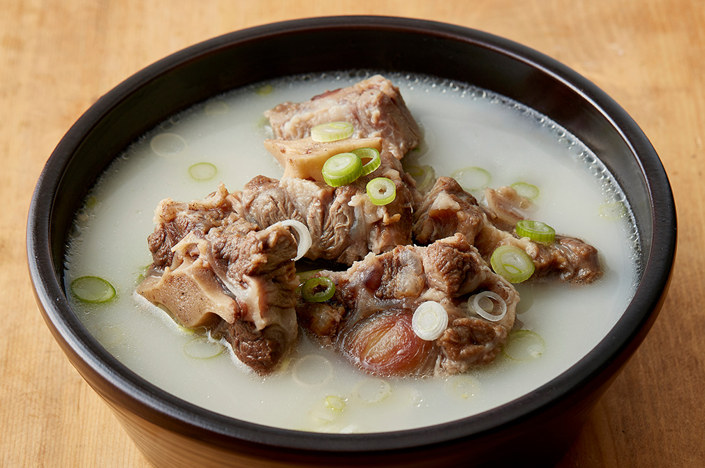
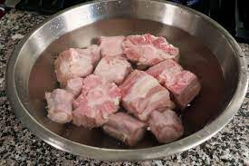
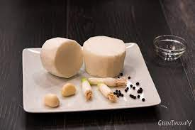
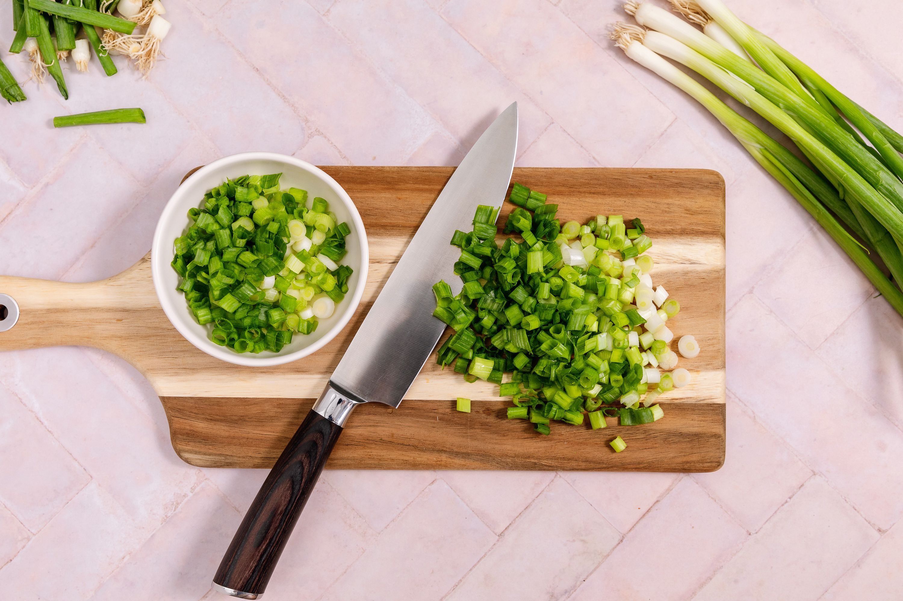
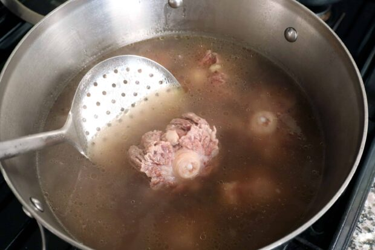
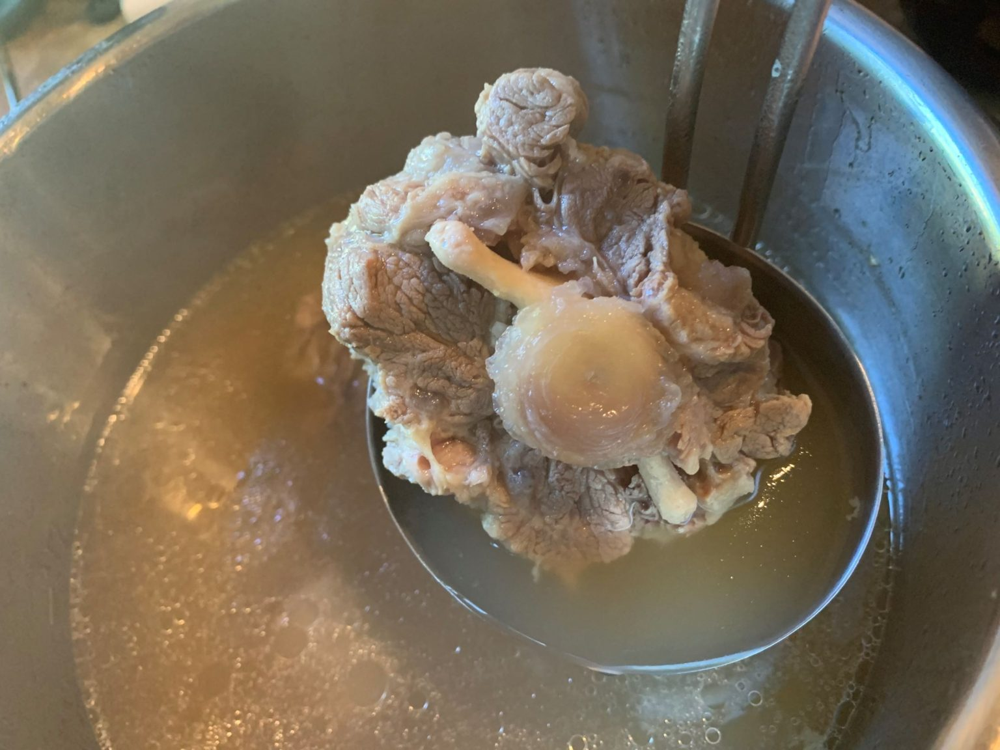
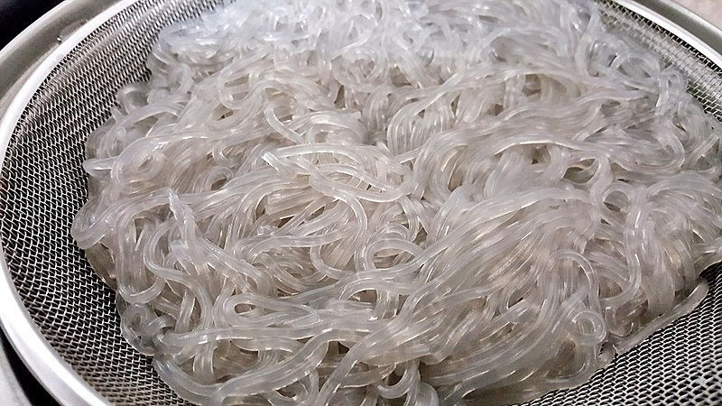
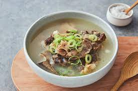

Korean Ox Tail Soup

Korean Ox tail soup, my favorite!! Amazing broth and tender meat.
Ingredients
- 700g of Ox tail
- 2-4 cloves of garlic
- 1 scallion
- 200g of glass noodle
- Whole black pepper
- 3 tbsp of soup soy sauce
- 1 tbsp of chopped green onion
- 1 tbsp of minced garlic
- 1 tbsp of sesame oil
- 1 tsp of peppper powder
- 1 tsp of salt
Steps
- Soak the oxtail in cold water for 2 hours to drain the blood

-
Scrape only the dirty part of the skin of the radish with a knife, then wash it thoroughly with water or peel it before preparing

- 3 scallions, finely chopped, washed and prepared

- Put the oxtail in boiling water, boil it slightly, and rinse thoroughly in cold water

- Cleanly add 4/1 of water to the tail of the march, add radish, garlic, whole pepper, and green onion roots, and boil over high heat for about 20 minutes. Skim off the oil in the middle of boiling, and if the water is reduced, add more cold water and boil until the meat is soft

- Boil the glass nooodle, rinse in cold water, and cut into bite-sized pieces

- Take out the lightly cooked oxtail from step 5, add the seasoning ingredients and season it.
Seasoning Ingredients:
3 Tbsp soy sauce for soup, 1 Tbsp minced green onion, 1 Tbsp minced garlic, 1 Tbsp sesame oil, a little bit of pepper powder, a little bit of salt Slice the radish thinly
- Boil the seasoned tail, radish, glass noodles, green onion, and broth separately in a bowl, then put them in and season with pepper and salt

Full Recipe here